Reading: Gilat Ch. 5
Code from class: plotting.m
x = 0:pi/100:2*pi;
y = sin(x);
plot(x,y);
% Now label the axes and add a title. The characters \pi create the
% symbol π. See "text strings" in the MATLAB Reference documentation for
% more symbols:
xlabel('x = 0:2\pi');
ylabel('Sine of x');
title('Plot of the Sine Function','FontSize',12);
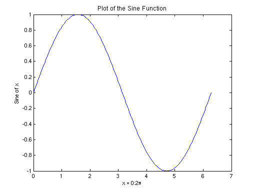
Here's another example from that tutorial.
t = 0:pi/10:2*pi; [X,Y,Z] = cylinder(4*cos(t)); subplot(2,2,1); mesh(X) subplot(2,2,2); mesh(Y) subplot(2,2,3); mesh(Z) subplot(2,2,4); mesh(X,Y,Z)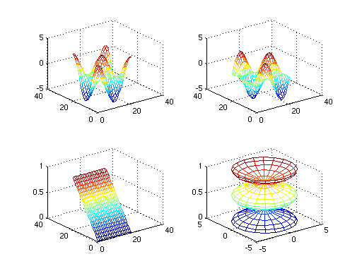
You may do this manually through MATLAB's GUI by going to the File menu of the Figure window and selecting Save. By default, it will use a MATLAB Figure file format with suffix .fig that is convenient for reloading in MATLAB. You may also change the file type to export to more standard figure formats (e.g., .jpg, .eps, .pdf, .png).
You can also perform the save from the MATLAB command window by using a command such as saveas('myPicture.jpg') or saveas(gcf,'myPicture.pdf'). The variable gcf is a handle designating the current figure (some scripts may open multiple figure windows at once, in which case the first parameter can be used to select from among those figures).
plot(y)
for vector y, makes a line
graph using the vector values as y-coordinates. The
corresponding x-coordinates are implicitly 1:length(y).
plot(1 ./ 2 .^ (1:10));
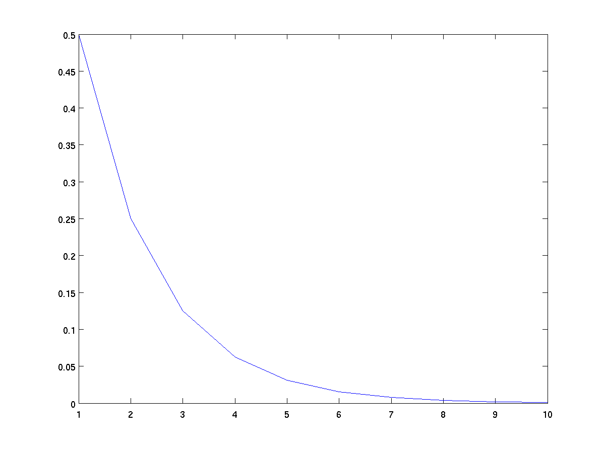
plot(x, y)
for vectors x and y with equal length, makes
a line graph connecting the corresponding x-y points.
x = 0:0.1:1.5; % steps from 0 to 1.5, at 0.1 intervals
y = x .^ 2; % y = x^2 parabola
plot(x,y);
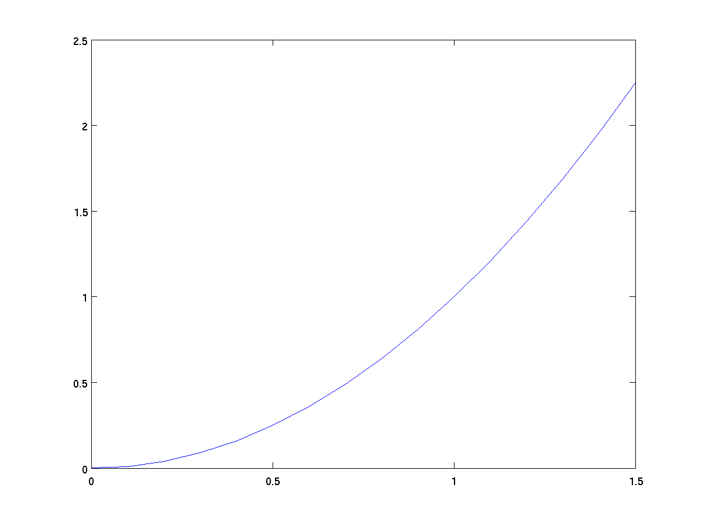
We can plot any pairs of vectors this way so long as they have the same length. It is not necessary for x to be a simple range. For example, we could plot x as a function of y as.
y = -1:0.1:1;
x = y .^ 2; % x = y^2 horizontal parabola
plot(x,y);
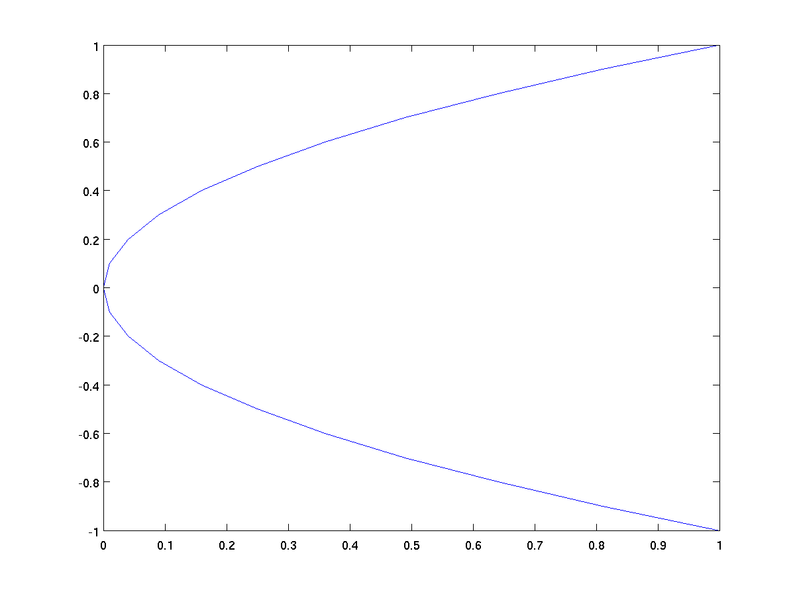
Here is a classic parametric curve, where both x and y are defined relative to another parameter t.
t = 0:pi/200:8*pi;
x = t .* sin(t);
y = t .* cos(t);
plot(x,y);
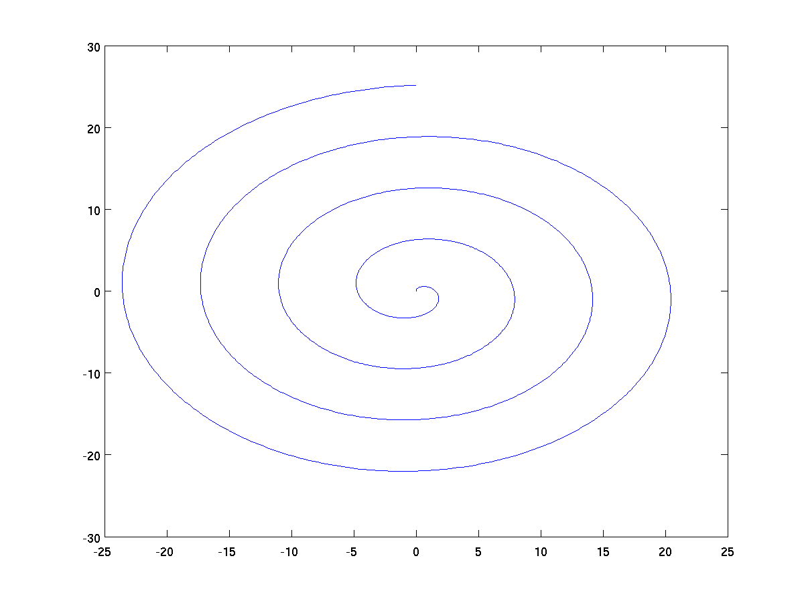
If x is a vector and y is a matrix, plot(x,y) will simultaneously plot individual rows (or columns) of y.
x = 0:0.1:1.5; % steps from 0 to 1.5, at 0.1 intervals
y = [x .^ 2; x .^ 3; x .^ 4]; % three functions in one
plot(x,y);
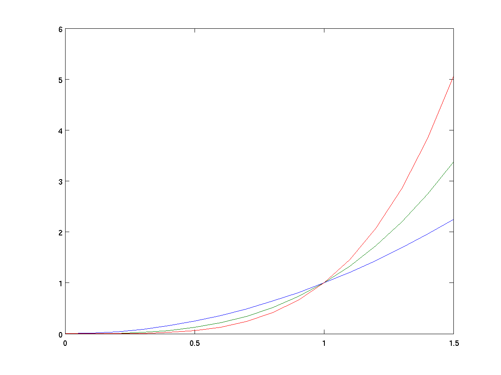
By default, MATLAB automatically scales both axes to make good use of the figure window while ensure not to clip any of the plotted data. For example, in our earlier graph of the equation y = x .^ 2, the x-axis goes from 0 to 1.5 because that was the range of values in our vector 0:0.1:1.5 while the y-axis ranges from 0 to 2.5. Yet in the graph where we simultaneously graphed x^2, x^3, and x^4, the y-range was scaled from 0 to 6 so that all three plots fit.
While auto-mode for axes is usually convenient, there are times when we would like to better control the choice. For example, in the graph of x^2, the scale for the x-axis is not the same as the scale for the y-axis. This distorts certain aspects of the graph, for example if trying to estimate the slope of the curve when x=1. We can force the two axes to be drawn with equal scale by using the command axis equal after the initial plot.
x = 0:0.1:1.5; % steps from 0 to 1.5, at 0.1 intervals y = x .^ 2; % y = x^2 parabola plot(x,y); axis equal;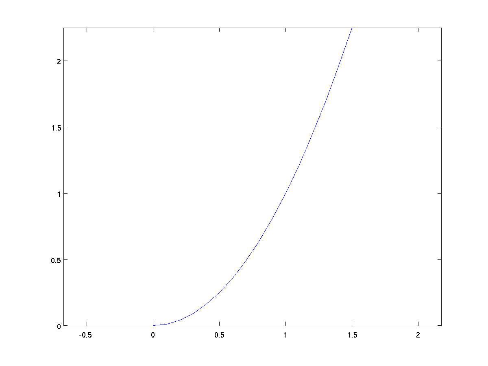
We can also set the axes range manually, using a syntax of the form
x = 0:0.1:1.5; % steps from 0 to 1.5, at 0.1 intervals y = x .^ 2; % y = x^2 parabola plot(x,y); axis([-1 1 -0.5 1.5]);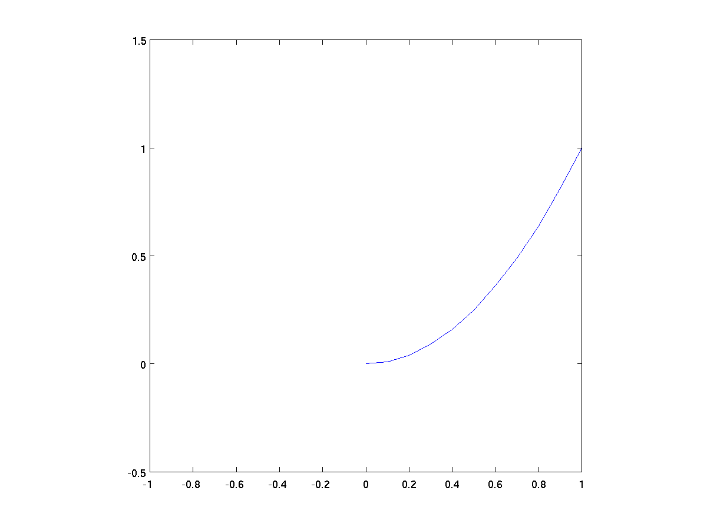
A separately controllable aspect of the figure is whether grid lines are drawn across the primary pane of the graph. By default, the grid lines are not there, but they can be turned on by giving the command grid on, as in the following.
x = 0:0.1:1.5; % steps from 0 to 1.5, at 0.1 intervals y = [x .^ 2; x .^ 3; x .^ 4]; % three functions in one plot(x,y); grid on;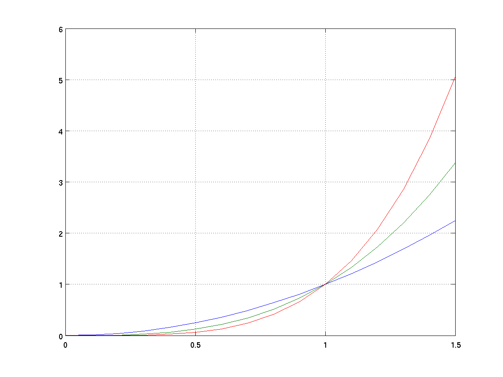
It is possible to augment a figure with a variety of labels
xlabel('your message goes here')
Places the given string along the x-axis.
ylabel('your message goes here')
Places the given string vertically along the y-axis.
title('your message goes here')
Places a title above the entire figure.
In a case when there are multiple lines on a single graph, we can add a custom legend to label the lines. Here is an example.
x = 0:0.1:1.5; % steps from 0 to 1.5, at 0.1 intervals
y = [x .^ 2; x .^ 3; x .^ 4]; % three functions in one
plot(x,y);
legend('quadratic', 'cubic', 'quartic');
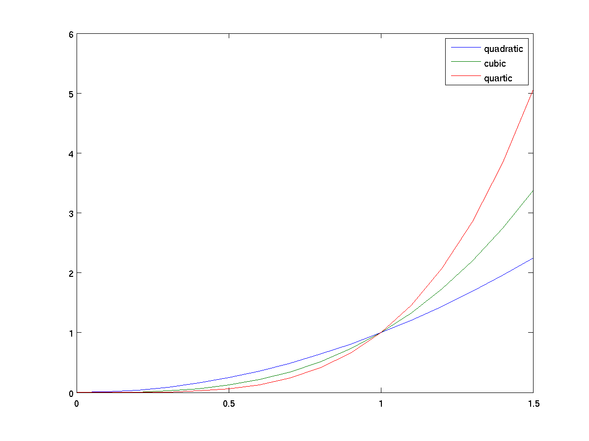
legend('quadratic', 'cubic', 'quartic', 'Location', 'NorthWest');
We have seen that by default, a graph uses a solid blue line as the primary line style. The line style can be changed by providing what is known as a line specifier as extra arguments to a plot call. The line specifier can be used to control three aspects:
plot(1 ./ 2 .^ (1:10), 'k*:'); % blac(k), asterisk markers, dotted lines
title('Inverse powers of two');
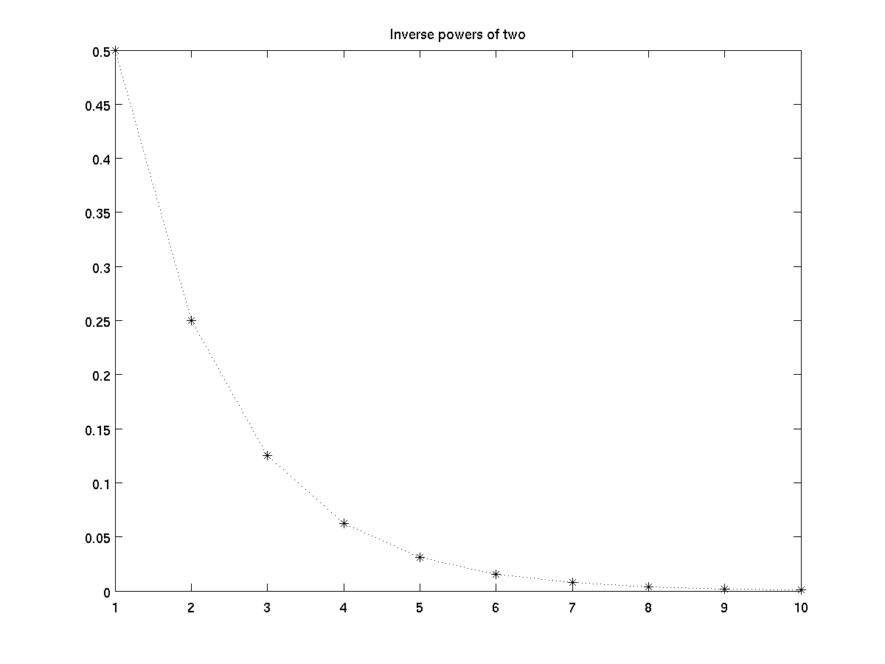
Note that if you use a line specifier and provide a marker type but not a line type, then the markers will be drawn without the connecting lines.
Typically, each call to plot causes a new figure to be drawn. However, there are several techniques to combine multiple graphs in a single figure.
We already showed how plot(x,y) can be used to plot vector x against all rows of a matrix y. It is also possible to combine completely indpendent plots in a single call using a format like plot(xA, yA, xB, yB). This plots xA versus yA, and xB versus yB. It requires that the length of xA and yA match each other, but not necessarily matching the lengths of xB and yB.
terms = 0:8;
approxE = cumsum(1 ./ factorial(terms));
plot(terms approxE, '*-', [terms(1) terms(end)], [exp(1) exp(1)], 'r--');
legend('approximation of e', 'e', 'Location', 'SouthEast');
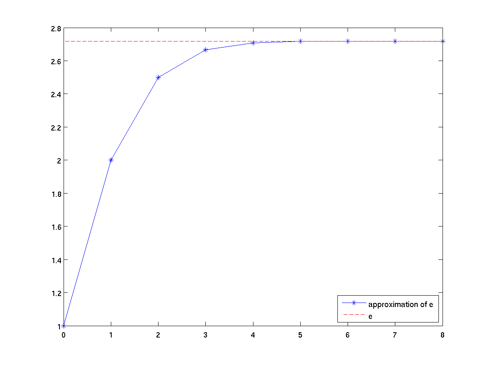
terms = 0:8;
approxE = cumsum(1 ./ factorial(terms));
plot(terms approxE, '*-');
hold on;
plot([terms(1) terms(end)], [exp(1) exp(1)], 'r--');
legend('approximation of e', 'e', 'Location', 'SouthEast');
Instead of overlaying several plots on the same set of axes, a figure window can be subdivided into separate panels of equal size. This is done by prefacing a normal drawing command with the command subplot(r, c, n), where r designates the number of rows in the division, c the number of panels in the division, and n the cardinality of the current subplot on that grid (numbered in row-major order) at which the drawing should be placed.
x = 0:pi/20:2*pi;
subplot(2,1,1);
plot(x, sin(x));
ylabel('sin(x)');
subplot(2,1,2);
plot(x, cos(x));
ylabel('cos(x)');
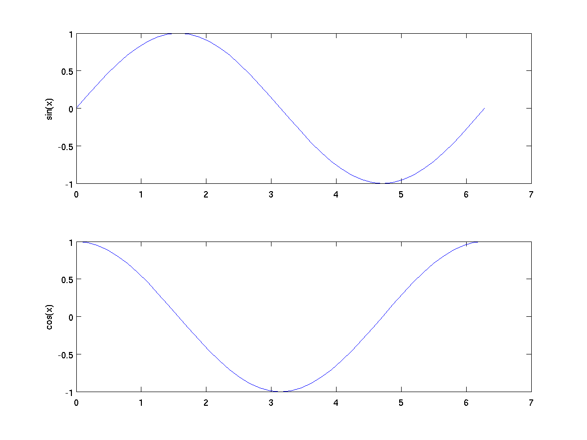
x = 0:pi/200:2*pi;
area(x, sin(x));
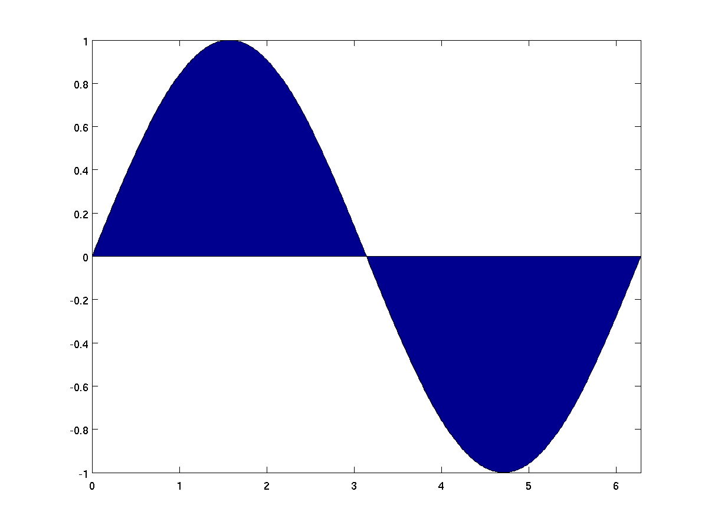
In the case that x is a vector and y is a matrix that has a number of rows matching the length of x, the area graph essentially plots the cumulative sums of the rows of y. As an example, here is a colorful way to show the graph of the polynomial x^2 + 2x + 1, with three different colors showing the contribution of the three terms.
x = linspace(0,3,100);
y = [x .^ 2; 2 .* x; ones(1,length(x))]'; % note the transpose
area(x, y);
legend('x^2', '2x', '1', 'Location', 'NorthWest');
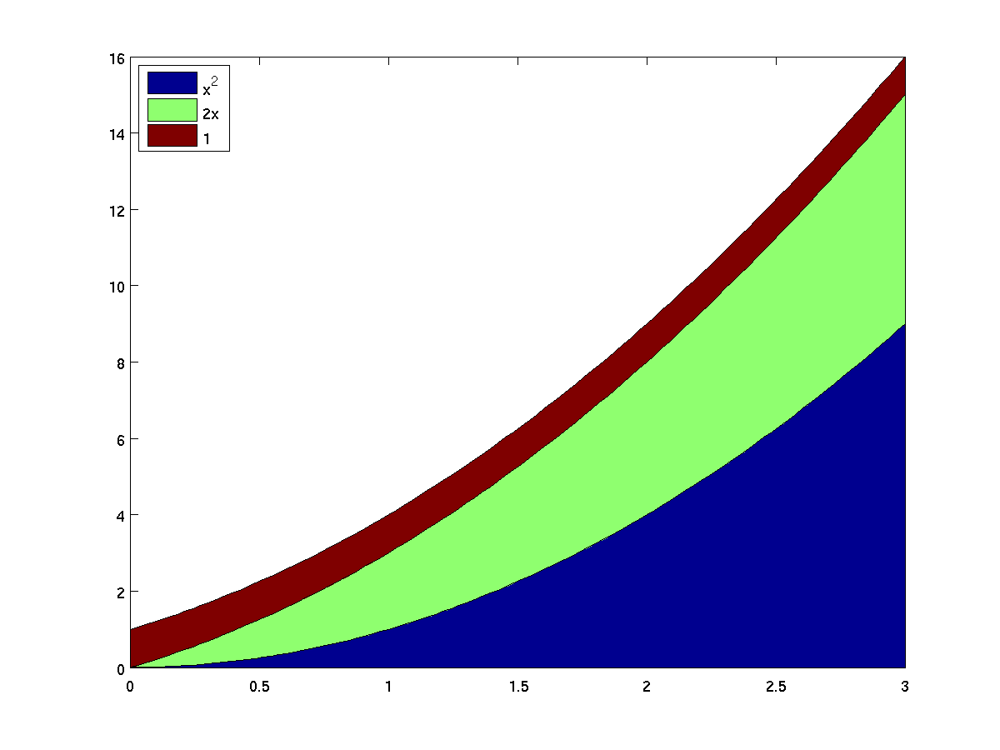
terms = 0:8;
approxE = cumsum(1 ./ factorial(terms));
stem(terms, approxE);
axis( [ -0.5 8.5 0 3] ); % better padding
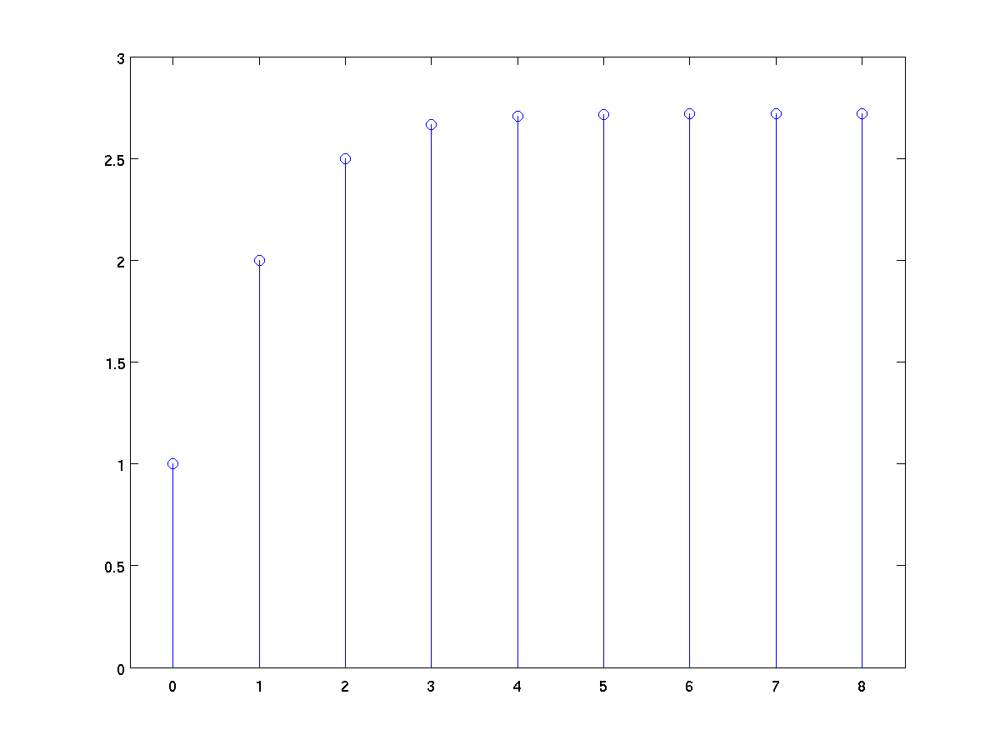
terms = 0:8;
approxE = cumsum(1 ./ factorial(terms));
bar(terms, approxE);
xlabel('Number of terms');
ylabel('Approximation of e');
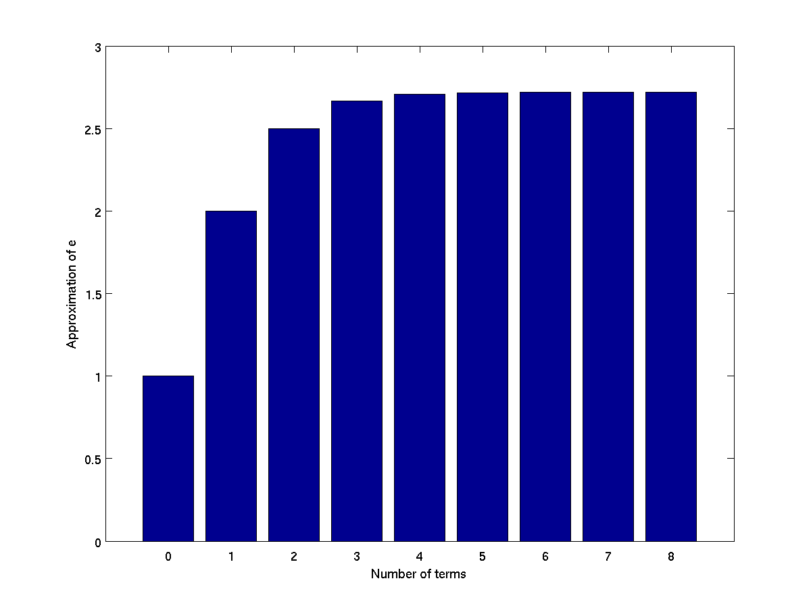
terms = 0:8;
powers = 2 .^ terms;
barh(terms, powers);
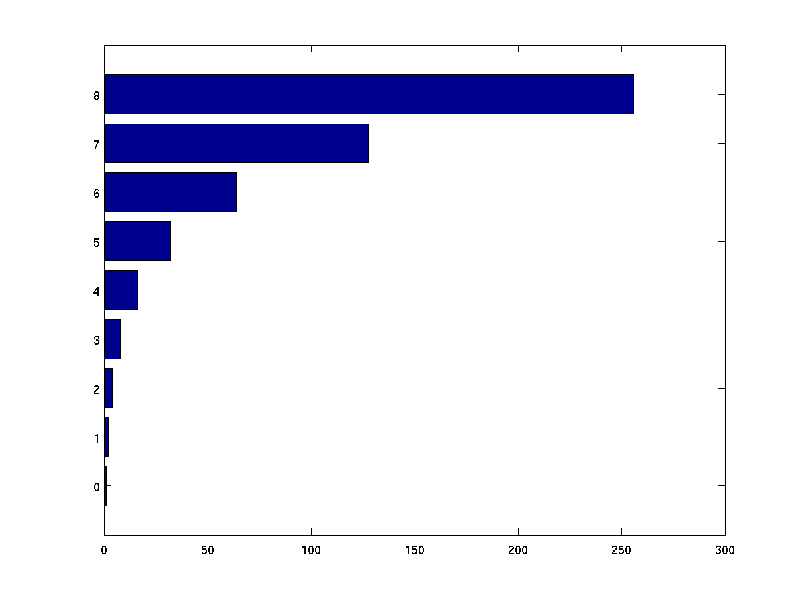
hist(rand(1,500000)); % 500,000 random values in ten buckets
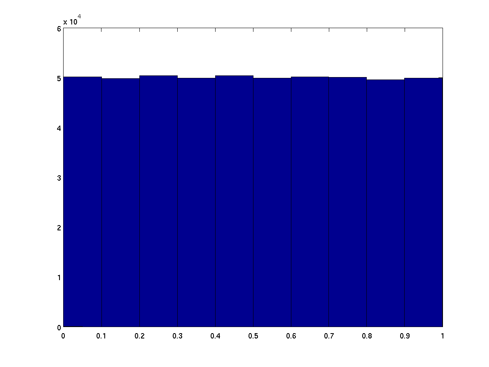
Here's an example with using randn to produce a normal distribution
hist(randn(1,500000),1000); % 500,000 random values in 1000 buckets
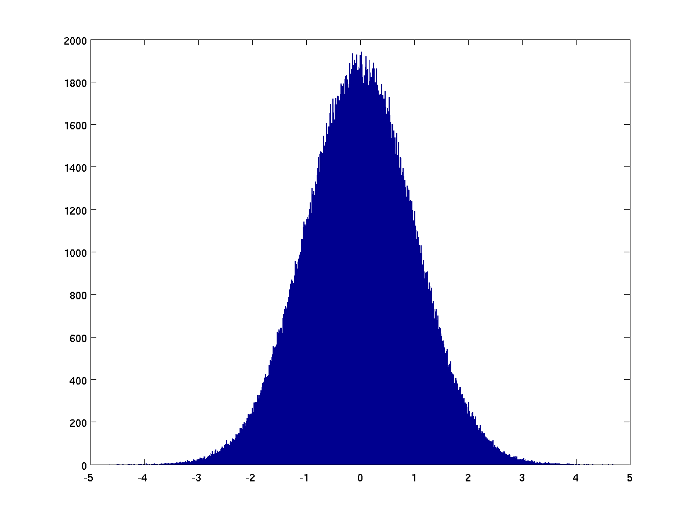
Here is an example on a discrete data set, perhaps representing years in which people were born.
birthyear = [1987 1990 1988 1991 1984 1990 1989 1987 1988 1990 1988];
range = min(birthyear):max(birthyear); % 1984:1991 in this case
hist(birthyear, range);
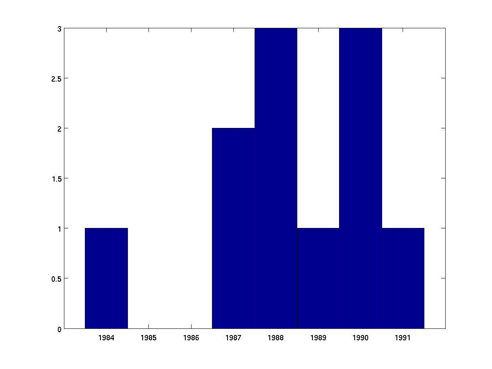
Note about histograms
The hist function is far more general than we have
shown here. Although it produces a figure by default, the
result can instead be stored as a vector. For example,
birthyear = [1987 1990 1988 1991 1984 1990 1989 1987 1988 1990 1988];
range = min(birthyear):max(birthyear); % 1984:1991 in this case
result = hist(birthyear, range); % no figure produced
In this case, the variable result is set to the vector
pie( [0.3 0.1 0.25], {'food' 'gas' 'housing'}); % notice labels are enclosed with curly braces not square braces
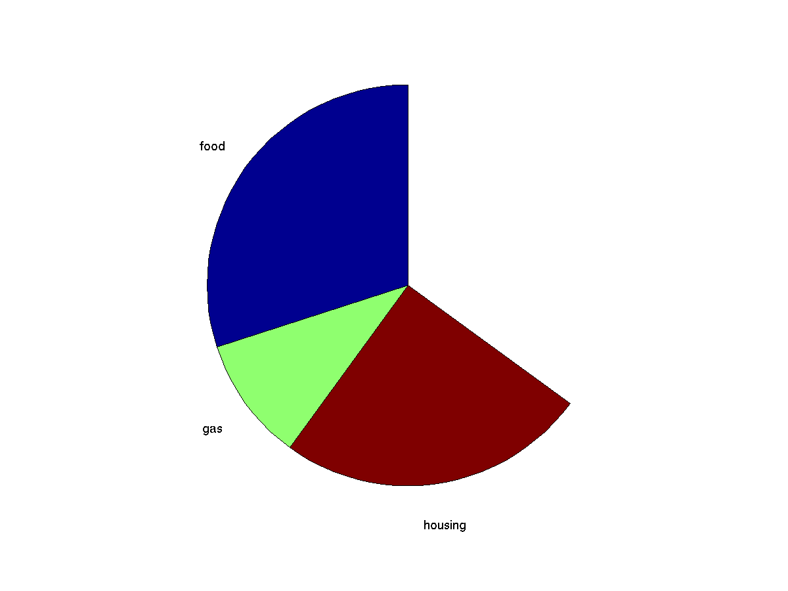
pie (2 .^ (0:6)); # no explicit labels
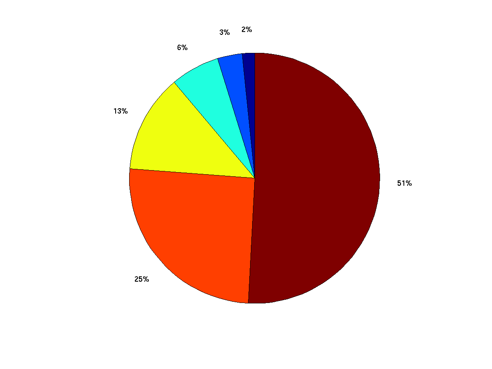
Can provide logical vector to make certain slices "explode".
pie (2 .^ (0:6), [0 0 1 0 1 0]); % third and fifth piece explode
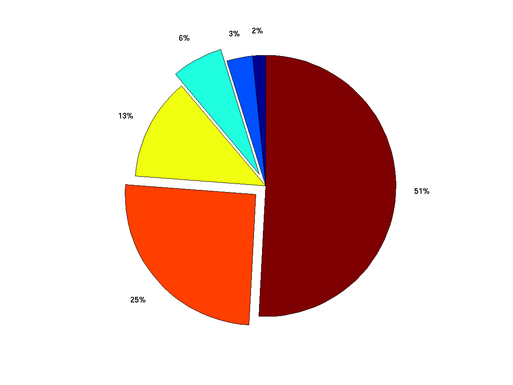
dice = ceil( rand(2,8) * 6);
image(dice);
colormap(lines); % better choice of colors
axis equal; % make squares
axis off; % don't bother labeling the axis
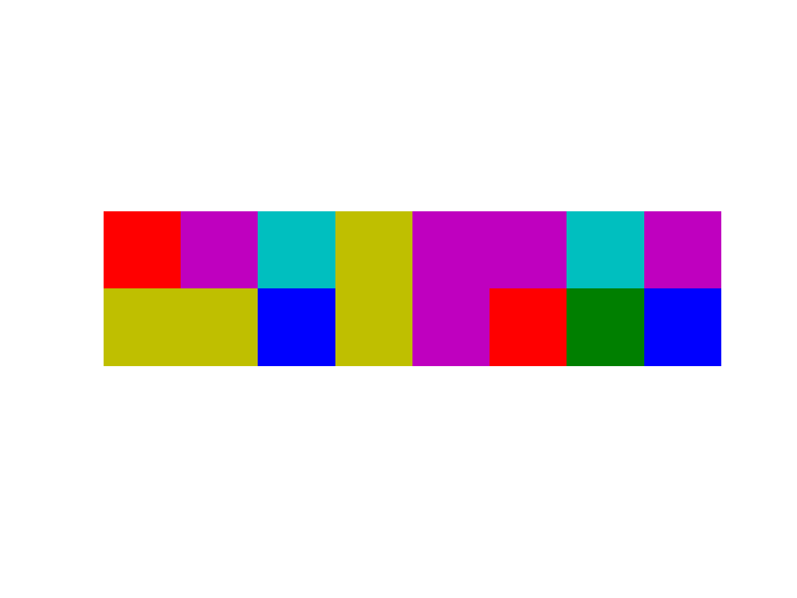